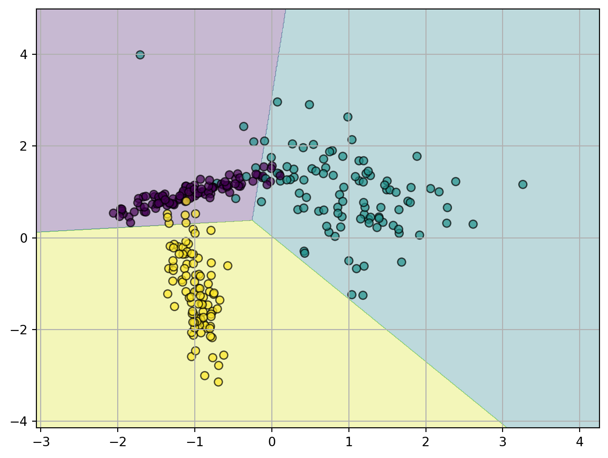

import numpy as np
import matplotlib.pyplot as plt
from sklearn.datasets import make_classification
from sklearn.linear_model import LogisticRegression
from sklearn.model_selection import train_test_split
from sklearn.metrics import classification_report, confusion_matrix
# Datos:
X, y = make_classification(
n_samples=300, n_features=2, n_informative=2, n_redundant=0,
n_classes=3, n_clusters_per_class=1, random_state=42
)
X_train, X_test, y_train, y_test = train_test_split(X, y, test_size=0.3, random_state=42)
# Modelo:
model = LogisticRegression(solver="lbfgs", penalty=None, max_iter=200)
model.fit(X_train, y_train)
# Predicción:
y_pred = model.predict(X_test)
prob_pred = model.predict_proba(X_test)Modelos lineales generalizados
Capítulo 2 - Sección 2
$$
$$
Tanto en el modelo de regresión lineal como en el de regresión logística, asumimos una cierta distribución condicional para \(Y|{\bf X}\) que depende de un vector de parámetros \(\boldsymbol{\theta}\in\mathbb{R}^p\).
En regresión lineal, suponemos \(Y|{\bf X}={\bf x}\sim\mathcal{N}(\boldsymbol{\theta}^\top{\bf x},\sigma^2)\).
En regresión logística, suponemos \(Y|{\bf X}={\bf x}\sim\text{Binom}(1,h_{\boldsymbol{\theta}}({\bf x}))\), con \(h_{\boldsymbol{\theta}}({\bf x})=\sigma(\boldsymbol{\theta}^\top{\bf x})\) y \(\sigma:\mathbb{R}\to\mathbb{R}\) la función logística.
En esta sección estudiaremos una familia más amplia de modelos, los Modelos Lineales Generalizados (GLM), que contienen a la regresión lineal y a la regresión logística como casos particulares, permitiendo modelar una gran variedad de problemas de regresión y clasificación. Para ello, en primer lugar introduciremos la familia exponencial de distribuciones, que incluye muchas de las distribuciones comúnmente utilizadas en estadística.
✏️ Notación
Para el caso de un vector aleatorio \(\mathbf{Z}\in\mathbb{R}^q\) con distribución de probabilidad \(\mathbb{P}_{{\bf Z}}\), se definen el vector de medias \(\mathbb{E}\left[{\bf Z}\right]\in\mathbb{R}^q\) y la matriz de covarianza \(\mathop{\mathrm{Cov}}\left[{\bf Z}\right]\in\mathbb{R}^{q\times q}\) como sigue: \[ \mathbb{E}\left[{\bf Z}\right]:=\int \mathbf{z}\,d\mathbb{P}_{{\bf Z}}({\bf z}), \] \[ \mathop{\mathrm{Cov}}\left[{\bf Z}\right]:=\mathbb{E}\left[({\bf Z}-\mathbb{E}\left[{\bf Z}\right])({\bf Z}-\mathbb{E}\left[{\bf Z}\right])^\top\right]. \]
I │ La familia exponencial
Definición 2.3.1. (Familia exponencial) Decimos que una clase de distribuciones pertenece a la familia exponencial si se puede escribir en la forma
\[ p(y \mid \boldsymbol{\eta}) := h(y) \exp\left\{\boldsymbol{\eta}^\top T(y) - A(\boldsymbol{\eta})\right\}, \tag{2.3.1} \]
con \(h:\mathbb{R}\to\mathbb{R}\), \(\boldsymbol{\eta}\in\mathbb{R}^q\), \(T:\mathbb{R}\to\mathbb{R}^q\) y \(A:\mathbb{R}^q\to\mathbb{R}\).
En la expresión (1) se distinguen los siguientes elementos:
\(\boldsymbol{\eta}\in\mathbb{R}^q\) es el parámetro natural.
\(T:\mathbb{R}\to\mathbb{R}^q\) es el estadístico suficiente.
\(h:\mathbb{R}\to\mathbb{R}\) es la función base que depende únicamente de \(y\).
\(A:\mathbb{R}^q\to\mathbb{R}\) es la función de partición que normaliza la expresión, garantizando que la distribución integre a 1.
Para un mismo \(h\) y \(T\), la familia exponencial consiste en todas las distribuciones que se obtienen al variar el parámetro natural \(\boldsymbol{\eta}\). Observar que (2.3.1) puede expresarse también como \[ p(y\mid\boldsymbol{\eta})=\frac{h(y)\exp\left\{\boldsymbol{\eta}^\top T(y)\right\}}{\exp\left\{A(\boldsymbol{\eta})\right\}}=\frac{h(y)\exp\left\{\boldsymbol{\eta}^\top T(y)\right\}}{\displaystyle\int h(y)\exp\left\{\boldsymbol{\eta}^\top T(y)\right\}\,dy}. \tag{2.3.2} \]
lo cual resulta del hecho que \(\int p(y\mid\boldsymbol{\eta})\,dy=1\).
Ejemplo 2.3.2 Distribución Bernoulli
Sea \(Y\in\{0,1\}\) tal que \(Y\sim\text{Binom}(1,\phi)\), con \(\phi:=\mathbb{P}[Y=1]\). Entonces \[ p(y\mid\phi) = \phi^y(1-\phi)^{1-y}. \]
De acuerdo a lo visto en regresión logística, la distribución de \(Y\) se puede escribir como \[ p(y\mid\phi) = \exp\left\{\eta y-A(\eta)\right\}. \] con parámetro natural \[ \eta=\log\left(\frac{\phi}{1-\phi}\right)\in\mathbb{R}, \]
y estadístico suficiente \(T:\mathbb{R}\to\mathbb{R}\) definido por \(T(y)=y\). Por lo tanto, la distribución Bernoulli es un miembro de la familia exponencial. El resto de los elementos son: \[ h(y)=1,\qquad A(\eta)=-\log(1-\phi)=\log(1+e^\eta). \]
Ejemplo 2.3.3 Distribución Normal univariada
Sea \(Y\in\mathbb{R}\) tal que \(Y\sim\mathcal{N}(\mu,\sigma^2)\). Entonces
\[ \begin{align*} p(y \mid \mu, \sigma^2) & = \frac{1}{\sqrt{2\pi}\sigma} \exp\left\{-\frac{(y - \mu)^2}{2\sigma^2}\right\} \\[2pt] & = \frac{1}{\sqrt{2\pi}}\exp\left\{-\frac{1}{2\sigma^2}y^2+\frac{\mu}{\sigma^2}y-\frac{\mu^2}{2\sigma^2}-\log\sigma\right\} \\[2pt] & = \frac{1}{\sqrt{2\pi}}\exp\left\{\left(\frac{\mu}{\sigma^2},-\frac{1}{2\sigma^2}\right)^\top (y,y^2)-\frac{\mu^2}{2\sigma^2}-\log\sigma\right\}. \end{align*} \]
Por lo tanto, la distribución Normal univariada es un miembro de la familia exponencial, con parámetro natural
\[ \boldsymbol{\eta}=\left(\frac{\mu}{\sigma^2},-\frac{1}{2\sigma^2}\right)\in\mathbb{R}^2, \]
y estadístico suficiente \(T:\mathbb{R}\to\mathbb{R}^2\) definido por \(T(y)=(y,y^2)\). El resto de los elementos son: \[ h(y)=\frac{1}{\sqrt{2\pi}}, \qquad A(\boldsymbol{\eta})=\frac{\mu^2}{2\sigma^2}+\log\sigma=-\frac{\eta_1^2}{4\eta_2}+\frac{1}{2}\log(-2\eta_2). \]
Existen muchas otras distribuciones que son miembros de la familia exponencial: la Multinomial (que veremos más adelante), la Poisson (para modelar datos de conteo), la Gamma y la Exponencial (para modelar variables continuas no negativas, como intervalos de tiempo) la Beta y la Dirichlet (para distribuciones sobre probabilidades), y muchas más.
Importante
La función de partición \(A:\mathbb{R}^q\to\mathbb{R}\) queda definida a partir de la siguiente expresión: \[ A(\boldsymbol{\eta}):=\log\int h(y)\exp\left\{\boldsymbol{\eta}^\top T(y)\right\}\,dy. \]
Se verifica que \[ \nabla A(\boldsymbol{\eta})=\mathbb{E}\left[T(Y)\right]\in\mathbb{R}^q,\qquad \nabla^2 A(\boldsymbol{\eta})=\mathop{\mathrm{Cov}}\left[T(Y)\right]\in\mathbb{R}^{q\times q}. \]
Mostrar detalles
Derivando respecto de \(\boldsymbol{\eta}\), resulta \[ \nabla A(\boldsymbol{\eta})=\frac{\nabla\left[\displaystyle\int h(y)\exp\left\{\boldsymbol{\eta}^\top T(y)\right\}\,dy\right]}{\displaystyle\int h(y)\exp\left\{\boldsymbol{\eta}^\top T(y)\right\}\,dy}=\frac{\displaystyle\int h(y)\exp\left\{\boldsymbol{\eta}^\top T(y)\right\}\, T(y)\,dy}{\displaystyle\int h(y)\exp\left\{\boldsymbol{\eta}^\top T(y)\right\}\,dy}, \]
donde hemos asumido que la derivación bajo el signo integral es válida para \(\boldsymbol{\eta}\) en un conjunto abierto. De (2.3.2) resulta \[ \nabla A(\boldsymbol{\eta})=\int T(y)\, p(y\mid\boldsymbol{\eta})\,dy=\mathbb{E}\left[T(Y)\right]. \]
Ahora bien, aplicando regla del cociente, resulta \[ \begin{align*} \nabla^2 A(\boldsymbol{\eta}) &= \displaystyle\int T(y)T(y)^\top p(y\mid\boldsymbol{\eta})\,dy - \displaystyle\int T(y) p(y\mid\boldsymbol{\eta})\,dy \int T(y)^\top p(y\mid\boldsymbol{\eta})\,dy \\[3pt] &=\mathbb{E}\left[T(y) T(y)^\top\right]-\mathbb{E}\left[T(y)\right]\mathbb{E}\left[T(y)\right]^\top \\[3pt] &=\mathop{\mathrm{Cov}}\left[T(Y)\right]. \end{align*} \]
De lo anterior resulta que \(\nabla^2 A(\boldsymbol{\eta})\succeq 0\), lo cual significa que \(A\) es una función convexa.
Ejemplo 2.3.4 Gradiente y Hessiana de \(A(\boldsymbol{\eta})\) para las distribuciones Bernoulli y Normal univariada
Vamos a verificar la expresión de \(\nabla A(\boldsymbol{\eta})\) y \(\nabla^2 A(\boldsymbol{\eta})\) para los casos de las distribuciones Bernoulli y Normal univariada, utilizando las expresiones obtenidas en los ejemplos 2.3.2 y 2.3.3.
Si \(Y\sim\text{Binom}(1,\phi)\), entonces \[ A'(\eta)=\frac{e^{\eta}}{1+e^{\eta}}=\frac{\frac{\phi}{1-\phi}}{\frac{1}{1-\phi}}=\phi=\mathbb{E}\left[Y\right], \] \[ A''(\eta)=\frac{e^{\eta}}{(1+e^{\eta})^2}=\frac{\frac{\phi}{1-\phi}}{\frac{1}{(1-\phi)^2}}=\phi(1-\phi)=\mathop{\mathrm{Cov}}\left[Y\right]. \]
Para la distribución Normal univariada serán de utilidad sus momentos. Si \(Y\sim\mathcal{N}(\mu,\sigma^2)\), se tiene que \[ \mathbb{E}\left[Y\right]=\mu,\qquad\mathbb{E}\left[Y^2\right]=\mu^2+\sigma^2 \] \[ \mathbb{E}\left[Y^3\right]=\mu^3+3\mu\sigma^2,\qquad \mathbb{E}\left[Y^4\right]=\mu^4+6\mu^2\sigma^2+3\sigma^4. \]
Ahora sí derivamos: \[ \nabla A(\boldsymbol{\eta})=\left(-\frac{\eta_1}{2\eta_2},\frac{\eta_1^2}{4\eta_2^2}-\frac{1}{2\eta_2}\right)^\top=(\mu,\mu^2+\sigma^2)^\top=\mathbb{E}\left[(Y,Y^2)\right]=\mathbb{E}\left[T(Y)\right], \] \[ \nabla^2 A(\boldsymbol{\eta})=\begin{pmatrix} -\displaystyle\frac{1}{2\eta_2} & \displaystyle\frac{\eta_1}{2\eta_2^2} \\ \displaystyle\frac{\eta_1}{2\eta_2^2} & -\displaystyle\frac{\eta_1^2}{2\eta_2^3}+\frac{1}{2\eta_2^2} \end{pmatrix} =\begin{pmatrix} \sigma^2 & 2\mu\sigma^2 \\ 2\mu\sigma^2 & 4\mu^2\sigma^2+2\sigma^4 \end{pmatrix}=\mathop{\mathrm{Cov}}\left[T(Y)\right], \] donde para esta última igualdad se usaron las igualdades \[ \mathop{\mathrm{Var}}\left[Y^2\right]=\mathbb{E}\left[Y^4\right]-\mathbb{E}\left[Y\right]^2,\qquad\mathop{\mathrm{Cov}}\left[Y,Y^2\right]=\mathbb{E}\left[Y^3\right]-\mathbb{E}\left[Y\right]\,\mathbb{E}\left[Y^2\right]. \]
II │ Modelo lineal generalizado
Supongamos que deseas construir un modelo para estimar el número \(y\) de clientes que llegan a tu tienda (o el número de visitas a páginas web en tu sitio) en una hora determinada, basándote en ciertas características como promociones en la tienda, publicidad reciente, clima, día de la semana, etc. Sabemos que la distribución Poisson usualmente proporciona un buen modelo para el número de visitantes. Sabiendo esto, ¿cómo podemos proponer un modelo para nuestro problema? Afortunadamente, la Poisson es una distribución de la familia exponencial, por lo que podemos aplicar un Modelo Lineal Generalizado (GLM). En esta sección, describiremos un método para construir modelos GLM para problemas como este.
En forma general, consideremos un problema de regresión o clasificación donde queremos predecir el valor de alguna variable aleatoria \(Y\in\mathbb{R}\) a partir de un conjunto de predictoras \({\bf X}\in\mathbb{R}^p\). La familia exponencial será nuestra herramienta para modelar las distribuciones condicionales \(Y|{\bf X}\). De hecho, formalmente un GLM queda definido a partir del siguiente supuesto:
Supuesto del modelo
\(Y|{\bf X}={\bf x}\) se distribuye según una distribución de la familia exponencial con parámetro natural de la forma
\[ \boldsymbol{\eta}:=\boldsymbol{\Theta}^\top{\bf x},\qquad\boldsymbol{\Theta}\in\mathbb{R}^{p\times q}. \]
El parámetro natural \(\boldsymbol{\eta}\in\mathbb{R}^q\) queda conectado a la función de regresión \(\mathbb{E}\left[T(Y)\mid {\bf x};\boldsymbol{\Theta}\right]\) a partir de una función de enlace canónica \(g:\mathbb{R}^q\to\mathbb{R}^q\).
Ejemplo 2.3.5 Función de enlace en regresión logística
En regresión logística, el estadístico suficiente es \(T(y)=y\). Además, sabemos que \[ \eta=\boldsymbol{\theta}^\top{\bf x},\qquad \mathbb{E}\left[Y\mid{\bf x};\boldsymbol{\theta}\right]=h_{\boldsymbol{\theta}}({\bf x})=\sigma(\boldsymbol{\theta}^\top{\bf x}) \]
Es decir, \(\mathbb{E}\left[Y\mid{\bf x};\boldsymbol{\theta}\right]=\sigma(\eta)\). Por lo tanto, \[ \eta=\sigma^{-1}\left(\mathbb{E}\left[Y\mid{\bf x};\boldsymbol{\theta}\right]\right). \]
Así, la función de enlace canónica para regresión logística es la función inversa de la función logística, a saber \(\mathop{\mathrm{logit}}: (0,1)\to\mathbb{R}\), definida por \[ \mathop{\mathrm{logit}}p:=\log\frac{p}{1-p}. \]
Ahora bien, tanto en regresión lineal como en regresión logística el objetivo es predecir \(\mathbb{E}\left[Y\mid {\bf x}; \boldsymbol{\theta}\right]\). De hecho, denotamos \[ \hat{y}:=\mathbb{E}\left[Y\mid {\bf x};\hat{\boldsymbol{\theta}}\right]. \]
En GLM la cosa es similar:
El modelo GLM nos permite predecir \[ h_{\boldsymbol{\Theta}}({\bf x}):=\mathbb{E}\left[T(Y)\mid{\bf x};\boldsymbol{\Theta}\right] \]
No obstante, en la mayoría de los casos el estadístico suficiente es \(T(y)=y\), de manera que el modelo obtenido predice exactamente \(\hat{y}\), que en definitiva es lo que uno pretende a la hora de aplicar regresión.
A continuación, vamos a abordar el problema de estimación de los parámetros en un GLM de la manera habitual: definiendo el problema de optimización a partir del principio de máxima verosimilitud y luego, de ser posible, aplicando una condición de optimalidad. Por razones de simplicidad, supondremos \[ \eta=\boldsymbol{\theta}^\top{\bf x}\in\mathbb{R},\qquad \boldsymbol{\theta}\in\mathbb{R}^p. \]
Función de verosimilitud
De (2.3.1) resulta \[ \log p(y_i\mid\eta)=\log(h(y))+\eta\, T(y_i)-A(\eta). \]
Por lo tanto, para un conjunto de datos \(\{{\bf x}_i,y_i\}_{i=1}^n\) i.i.d., la función de log-verosimilitud es \[ \ell(\boldsymbol{\theta})=\sum_{i=1}^n\left[\eta_i\, T(y_i)-A(\eta_i)\right]+\text{cte},\qquad \eta_i=\boldsymbol{\theta}^\top{\bf x}_i. \tag{2.3.3} \]
Optimalidad
De (2.3.3), el problema de optimización resultante es \[ \begin{array}{ll} \text{minimizar } & \underbrace{\displaystyle\sum_{i=1}^n\left[A(\eta_i)-\eta_i\, T(y_i)\right]}_{J(\boldsymbol{\theta})} \end{array} \tag{2.3.4} \]
¡Cuidado! La variable de optimización es \(\boldsymbol{\theta}\), que determina cada valor del parámetro natural a partir de la expresión \(\eta_i=\boldsymbol{\theta}^\top{\bf x}_i\).
Dado que tenemos convexidad, podemos plantear \(\nabla J(\boldsymbol{\theta})=0\). Como es \(\eta_i\) quien depende de \(\boldsymbol{\theta}\), al derivar respecto de \(\theta_k\) resulta \[ \frac{\partial J}{\partial \theta_k}=\sum_{i=1}^n \left[A'(\eta_i)-T(y_i)\right]x_{ik},\qquad k=1,\ldots,p. \]
Matricialmente, la condición de optimalidad queda expresada como \[ X^\top(A'(\tilde{\boldsymbol{\eta}})-T({\bf y}))=\mathbf{0}, \tag{2.3.5} \] donde hemos denotado \[ \tilde{\boldsymbol{\eta}}=(\eta_1,\ldots,\eta_n)^\top,\qquad A'(\tilde{\boldsymbol{\eta}})=(A'(\eta_1),\ldots,A'(\eta_n))^\top. \]
Por propiedad de la derivada de la función de partición \(A\), podemos reescribir la condición (2.3.5) como \[ \sum_{i=1}^n\left(\mathbb{E}\left[T(Y)\mid{\bf X}={\bf x}_i\right]-T(y_i)\right)\,{\bf x}_i=\mathbf{0}. \]
Observar que lo del paréntesis es el residuo entre el valor observado de \(T(y_i)\) y su valor esperado según el modelo. La condición de optimalidad establece que, en el óptimo, los residuos son ortogonales a los predictores \({\bf x}_i\), es decir, ya no queda información lineal en los predictores que permita mejorar el ajuste del modelo.
En general, no existe una solución explícita para el punto óptimo \(\hat{\boldsymbol{\theta}}\) y, en consecuencia, solo queda recurrir a métodos iterativos para aproximarlo. Afortunadamente, el método de Newton da lugar a un algoritmo eficiente para resolver un GLM.
Resolución por método de Newton: algoritmo IRLS
Recordemos que el método de Newton actualiza los parámetros mediante \[ \boldsymbol{\theta}_{t+1}:=\boldsymbol{\theta}_t-\left[\nabla^2 J(\boldsymbol{\theta}_t)\right]^{-1}\nabla J(\boldsymbol{\theta}_t). \tag{2.3.6} \]
Su aplicación al problema (2.3.4) deriva en un algoritmo denominado IRLS (Iterative Reweighted Least Squares), que se basa en resolver iterativamente problemas de mínimos cuadrados ponderados (WLS). Para entender cómo se llega a este algoritmo, es necesario analizar la estructura del gradiente y del Hessiano de la función objetivo \(J(\boldsymbol{\theta})\).
Hasta ahora hemos visto que \[ \nabla J(\boldsymbol{\theta})=\sum_{i=1}^n(T(y_i)-\mathbb{E}\left[T(Y)\mid{\bf X}={\bf x}_i\right])\,{\bf x}_i, \]
Para la Hessiana, por su parte, la propiedad de la función de partición \(A\) nos permite escribir \[ \nabla^2 J(\boldsymbol{\theta})=-\sum_{i=1}^n\mathop{\mathrm{Cov}}\left[T(Y)\mid{\bf X}={\bf x}_i\right]\,{\bf x}_i{\bf x}_i^\top=-X^\top W X, \] donde \[ W:=\mathop{\mathrm{diag}}(w_1,\ldots,w_n),\qquad w_i:=\mathop{\mathrm{Cov}}\left[T(Y)\mid {\bf X}={\bf x}_i\right]. \]
Por lo tanto, la iteración del método de Newton resulta \[ \boldsymbol{\theta}_{t+1}:=\boldsymbol{\theta}_t+(X^\top W X)^{-1}\left(\sum_{i=1}^n(T(y_i)-\mathbb{E}\left[T(Y)\mid{\bf X}={\bf x}_i\right])\,{\bf x}_i\right) \tag{2.3.7} \]
Formulación de IRLS
La idea central que deriva en el algoritmo IRLS consiste en construir una pseudo-respuesta \({\bf z}\in\mathbb{R}^n\) tal que la actualización en (2.3.7) pueda interpretarse como la solución de un problema de mínimos cuadrados ponderados (WLS) con pesos \(W\) y pseudo-respuesta \({\bf z}\). Es decir, se busca \({\bf z}\) tal que \[ \boldsymbol{\theta}_{t+1}:=(X^\top W X)^{-1}X^\top W{\bf z}, \tag{2.3.8} \]
ya que el lado derecho es solución cerrada del problema de optimización \[ \begin{array}{ll} \text{minimizar } & \displaystyle\frac{1}{2}\|W^{1/2}({\bf z}-X\boldsymbol{\theta})\|_2^2. \end{array} \]
Es importante remarcar que tanto \(W\) como \({\bf z}\) dependerán del valor anterior \(\boldsymbol{\theta}_t\).
Definimos la pseudo-respuesta \({\bf z}\) a partir de la siguiente expresión: \[ z_i:=\eta_i+\frac{T(y_i)-\mathbb{E}\left[T(Y)\mid{\bf X}={\bf x}_i\right]}{w_i},\qquad i=1,\ldots,n. \]
Se verifica \[ X^\top W {\bf z}=X^\top W\tilde{\boldsymbol{\eta}}+\sum_{i=1}^n(T(y_i)-\mathbb{E}\left[T(Y)\mid{\bf X}={\bf x}_i\right])\,{\bf x}_i. \]
Para el paso actual de Newton, se tiene que \(\tilde{\boldsymbol{\eta}}=X\boldsymbol{\theta}_t\). Por lo tanto, resulta \(\boldsymbol{\theta}_t=(X^\top W X)^{-1}X^\top W\tilde{\boldsymbol{\eta}}\), lo cual implica que (2.3.7) y (2.3.8) son efectivamente equivalentes.
Así, en el algoritmo IRLS cada iteración consiste en resolver un problema de mínimos cuadrados ponderados con pesos \(W\) y pseudo-respuesta \({\bf z}\), para recién actualizar el vector de parámetros \(\boldsymbol{\theta}\). Repitiendo este procedimiento se aproxima el estimador de máxima verosimilitud del GLM, aprovechando la estructura del Hessiano para generar pasos más precisos que un simple descenso por gradiente.
Algoritmo IRLS
Dado un parámetro inicial \(\boldsymbol{\theta}_0\in\mathbb{R}^{p}\):
repetir para \(t = 0,1,2,\ldots\):
1° Calcular \(\tilde{\boldsymbol{\eta}} = X \boldsymbol{\theta}_t\) y \(\boldsymbol{\mu}\in\mathbb{R}^n\) tal que \(\mu_i=\mathbb{E}\left[T(Y)\mid{\bf X}={\bf x}_i\right]\).
2° Construir la matriz diagonal de pesos \(W\in\mathbb{R}^{n\times n}\) tal que \(w_{i} = \mathop{\mathrm{Cov}}\left[T(Y)\mid X={\bf x}_i\right]\).
3° Definir la pseudo-respuesta: \({\bf z}= \tilde{\boldsymbol{\eta}} + W^{-1}(T(\mathbf{y}) - \boldsymbol{\mu})\).
4° Actualizar \(\boldsymbol{\theta}_{t+1}:=(X^\top W X)^{-1}X^\top W{\bf z}\).
hasta que el criterio de parada se satisfaga.
Ejemplo 2.3.6 Algoritmo IRLS para regresión logística
En regresión logística, dada la matriz de predictoras \(X\in\mathbb{R}^{n\times p}\) y el vector de respuestas \({\bf y}\in\mathbb{R}^n\), el algoritmo IRLS se implementa de la siguiente manera. A partir del valor actual \(\boldsymbol{\theta}_t\), en la siguiente iteración se calculan:
El vector \(\tilde{\boldsymbol{\eta}}=X\boldsymbol{\theta}_t\in\mathbb{R}^n\).
El vector de medias \(\boldsymbol{\mu}=\sigma(\tilde{\boldsymbol{\eta}})\in\mathbb{R}^n\).
La matriz de pesos \(W\in\mathbb{R}^{n\times n}\) tal que \[ w_i = \sigma(\eta_i)(1-\sigma(\eta_i)), \qquad i=1,\ldots,n. \]
La pseudo-respuesta \[ {\bf z}=\tilde{\boldsymbol{\eta}}+W^{-1}({\bf y}-\boldsymbol{\mu})\in\mathbb{R}^n. \]
Finalmente, se actualiza el vector de parámetros \(\boldsymbol{\theta}\) a partir de la solución del problema de mínimos cuadrados ponderados con pesos \(W\) y pseudo-respuesta \({\bf z}\), determinada por la expresión (2.3.8).
III │ Regresión softmax
Consideremos un problema de clasificación en el que \(Y \in \{1, 2, \ldots, k\}\). Por ejemplo, en lugar de clasificar correos electrónicos en dos clases (spam o no spam), podríamos clasificarlos en tres clases: spam, correo personal y correo relacionado con el trabajo. Para modelar esta situación, usaremos la distribución multinomial con un único ensayo (también llamada distribución categórica) como un elemento de la familia exponencial. De esta manera, podremos construir un modelo GLM para clasificación multiclase, conocido como regresión softmax o regresión logística multinomial, que generaliza la regresión logística binaria a problemas con más de dos clases.
Ejemplo 2.3.7 Distribución categórica
Sea \(Y\in\mathbb{R}\) tal que \(Y\sim\text{Multinomial}(1,\boldsymbol{\phi})\), con \(\boldsymbol{\phi}\in\mathbb{R}^k\) tal que \(\sum_{i=1}^k\phi_i=1\). Entonces \[ p(y\mid\boldsymbol{\phi})=\phi_1^{\mathbf{1}\{y=1\}}\phi_2^{\mathbf{1}\{y=2\}}\ldots \phi_k^{\mathbf{1}\{y=k\}}, \]
donde \(\mathbf{1}\{\cdot\}\) es la función indicatriz, que vale 1 si su argumento es cierto y 0 en caso contrario. Definimos el estadístico suficiente \(T(y)\in\mathbb{R}^{k-1}\) mediante \[ (T(y))_i=\left\{ \begin{array}{cl} 1 & \mbox{si }y=i, \\ 0 & \mbox{si }y\neq i. \end{array} \right. \]
Podemos escribir \[ \begin{align} p(y\mid\boldsymbol{\phi}) &= \phi_1^{(T(y))_1}\phi_2^{(T(y))_2}\ldots\phi_{k-1}^{(T(y))_{k-1}}\phi_k^{1-\sum_{i=1}^{k-1}(T(y))_i} \\[2ex] &=\exp\left\{\left(\log\left(\frac{\phi_1}{\phi_k}\right), \log\left(\frac{\phi_2}{\phi_k}\right),\ldots, \log\left(\frac{\phi_{k-1}}{\phi_k}\right)\right)^\top T(y)+\log \phi_k\right\}. \end{align} \]
Por lo tanto, el parámetro natural es
\[ \boldsymbol{\eta}=\left(\log\left(\frac{\phi_1}{\phi_k}\right), \log\left(\frac{\phi_2}{\phi_k}\right),\ldots, \log\left(\frac{\phi_{k-1}}{\phi_k}\right)\right)^\top\in\mathbb{R}^{k-1}. \tag{2.3.9} \]
El resto de los elementos son: \[ h(y)=1,\qquad A(\boldsymbol{\eta})=-\log\phi_k=-\log\left(1-\sum_{i=1}^{k-1}\phi_i\right). \tag{2.3.19} \]
Para este modelo GLM, se tiene \[ \mathbb{E}\left[T(Y)\mid{\bf x};\boldsymbol{\phi}\right]=\left(\phi_1,\phi_2,\ldots,\phi_{k-1}\right)^\top. \]
La expresión (2.3.10) es la función de enlace, conocida como logit generalizado. Su inversa es la función softmax determinada por \[ \phi_i=\frac{\exp\{\eta_i\}}{1+\sum_{j=1}^{k-1}\exp\{\eta_j\}},\qquad i=1,\ldots,k-1. \]
El elemento restante de \(\boldsymbol{\phi}\) se obtiene a partir de la restricción \(\sum_{i=1}^k\phi_i=1\), lo cual implica
\[ \phi_k=\frac{1}{1+\sum_{j=1}^{k-1}\exp\{\eta_j\}}. \]
Modelo
El GLM asociado a la regresión softmax parte de la suposición \[ \boldsymbol{\eta}=\boldsymbol{\Theta}^\top{\bf x},\qquad\boldsymbol{\Theta}=\begin{pmatrix}\boldsymbol{\theta}_1,\ldots,\boldsymbol{\theta}_{k-1}\end{pmatrix}\in\mathbb{R}^{p\times(k-1)}. \]
Así, la distribución condicional de \(Y|{\bf X}\) está dada por \[ p(Y=i\mid{\bf x};\boldsymbol{\Theta}):=\phi_i=\frac{\exp\{\boldsymbol{\theta}_i^\top{\bf x}\}}{1+\sum_{j=1}^{k-1}\exp\{\boldsymbol{\theta}_j^\top{\bf x}\}},\qquad i=1,\ldots,k-1, \] \[ p(Y=k\mid{\bf x};\boldsymbol{\Theta}):=\phi_k=\frac{1}{1+\sum_{j=1}^{k-1}\exp\{\boldsymbol{\theta}_j^\top{\bf x}\}}. \tag{2.3.11} \]
El modelo de regresión softmax predice \[ h_{\boldsymbol{\Theta}}({\bf x}):=\mathbb{E}\left[T(Y)\mid{\bf x};\boldsymbol{\Theta}\right]=(\phi_1,\phi_2,\ldots,\phi_{k-1})^\top. \]
Optimalidad
El problema de optimización asociado es \[ \begin{array}{ll} \text{minimizar } & \displaystyle\sum_{i=1}^n\left[A(\boldsymbol{\eta}_i)-\boldsymbol{\eta}_i^\top T(y_i)\right]. \end{array} \]
De (2.3.10) y (2.3.11), podemos escribir la función objetivo como \[ J(\boldsymbol{\Theta})=\sum_{i=1}^n\left[\log\left(1+\sum_{j=1}^{k-1}\exp\{\boldsymbol{\theta}_j^\top{\bf x}_i\}\right)-{\bf x}_i^\top\boldsymbol{\Theta}\, T(y_i)\right]. \]
Derivando respecto a un vector \(\boldsymbol{\theta}_j\), \(j=1,\ldots,k-1\), obtenemos \[ \begin{align} \nabla_{\boldsymbol{\theta}_j}J(\boldsymbol{\Theta})&=\sum_{i=1}^n\left[\frac{\exp\{\boldsymbol{\theta}_j^\top{\bf x}_i\}}{1+\sum_{j=1}^{k-1}\exp\{\boldsymbol{\theta}_j^\top{\bf x}_i\}}-(T(y_i))_j\right]{\bf x}_i \\ &=\sum_{i=1}^n\left[\phi_j({\bf x}_i)-T(y_i)_j\right]\,{\bf x}_i. \end{align} \]
Finalmente, resulta \[ \nabla J(\boldsymbol{\Theta})=X^\top(P-T)\in\mathbb{R}^{p\times (k-1)}, \] con \[ P=\begin{pmatrix} \phi_1({\bf x}_1) & \cdots & \phi_{k-1}({\bf x}_1) \\ \phi_1({\bf x}_2) & \cdots & \phi_{k-1}({\bf x}_2) \\ \vdots & \ddots & \vdots \\ \phi_1({\bf x}_n) & \cdots & \phi_{k-1}({\bf x}_n) \end{pmatrix},\qquad T = \begin{pmatrix} (T(y_1))_1 & \cdots & (T(y_1))_{k-1} \\ (T(y_2))_1 & \cdots & (T(y_2))_{k-1} \\ \vdots & \ddots & \vdots \\ (T(y_n))_1 & \cdots & (T(y_n))_{k-1} \end{pmatrix} \]
Este vector gradiente de la función objetivo puede utilizarse para aplicar el método de descenso por gradiente en regresión softmax. Sin embargo, de acuerdo a lo visto anteriormente, es más adecuado el algoritmo IRLS, para aprovechar la información del Hessiano y generar pasos más precisos y acelerar la convergencia.
Ejemplo 2.3.8 Regresión softmax en datos simulados
Utilizaremos un conjunto de datos simulados para un problema de clasificación con 3 clases, para el cual ajustaremos un modelo de regresión softmax.
En este ejemplo utilizamos la implementación LogisticRegression de scikit-learn, la cual emplea por defecto el algoritmo LBFGS, un método cuasi-Newton ampliamente utilizado en problemas de optimización convexa. La implementación del algoritmo IRLS se abordará en las actividades prácticas.

Coeficientes estimados (clase 3 como referencia):
θ(1,1) = -0.498
θ(1,2) = 5.406
θ(2,1) = 6.481
θ(2,2) = 4.744
Matriz de Confusión:
[[24 3 0]
[ 4 34 0]
[ 4 0 21]]Referencias
Ng, A. (2022). Stanford CS229: Machine Learning - Lecture Notes. Standford University. 🔗 https://cs229.stanford.edu/notes2022fall/main_notes.pdf.